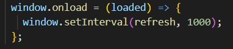
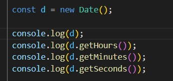
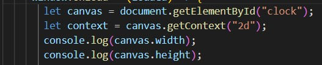

TP3
Romain MAURICE INFO1
Exercice 1
- Window.onload = loaded déclanche l'évenement une seule fois, une fois la page chrgée.
Window.setTimeout(refresh, 1000) déclanche l'évenement toute les secondes
-

-

-

-
let radius = (Math.min(canvas.width, canvas.height) / 2) * 0.8;
context.clearRect(0,0,canvas.width, canvas.height)
context.strokeStyle ="lightblue";
context.lineWidth = 3;
context.beginPath();
context.arc(canvas.width/2,canvas.height/2,radius,0,Math.PI *2 );
context.stroke();
-
let x = (canvas.width/2) + ( radius * ( Math.cos(Math.PI * ((date.getSeconds() - 15) / 30) ) ));
let y = (canvas.height/2) + ( radius * ( Math.sin(Math.PI * ((date.getSeconds() - 15) / 30) ) ));
-
context.strokeStyle ="red";
context.lineWidth = 4;
context.beginPath();
context.moveTo(canvas.width/2,canvas.height/2)
context.lineTo(x,y);
context.stroke();
-
context.strokeStyle ="lightblue";
context.lineWidth = 3;
context.strokeStyle ="red";
context.lineWidth = 4;
-
context.strokeStyle ="black";
context.lineWidth = 4;
context.beginPath();
context.moveTo(canvas.width/2,canvas.height/2)
context.lineTo(x2,y2);
context.stroke();
-
context.strokeStyle ="black";
context.lineWidth = 5;
context.beginPath();
context.moveTo(canvas.width/2,canvas.height/2)
context.lineTo(x3,y3);
context.stroke();
-
let i;
for (i=0; i"<"12*5 ; i=i+5){
let x4 = (canvas.width/2) + ( radius*0.97 * ( Math.cos(Math.PI * ((i - 15) / 30) ) ));
let y4 = (canvas.height/2) + ( radius*0.97 * ( Math.sin(Math.PI * ((i - 15) / 30) ) ));
let x5 = (canvas.width/2) + ( radius * ( Math.cos(Math.PI * ((i - 15) / 30) ) ));
let y5 = (canvas.height/2) + ( radius * ( Math.sin(Math.PI * ((i - 15) / 30) ) ));
context.strokeStyle ="darkblue";
context.lineWidth = 3;
context.beginPath();
context.moveTo(x4,y4)
context.lineTo(x5,y5);
context.stroke();
}
Exercice 2
- let radius = (Math.min(canvas.width, canvas.height) / 2) * 0.8;